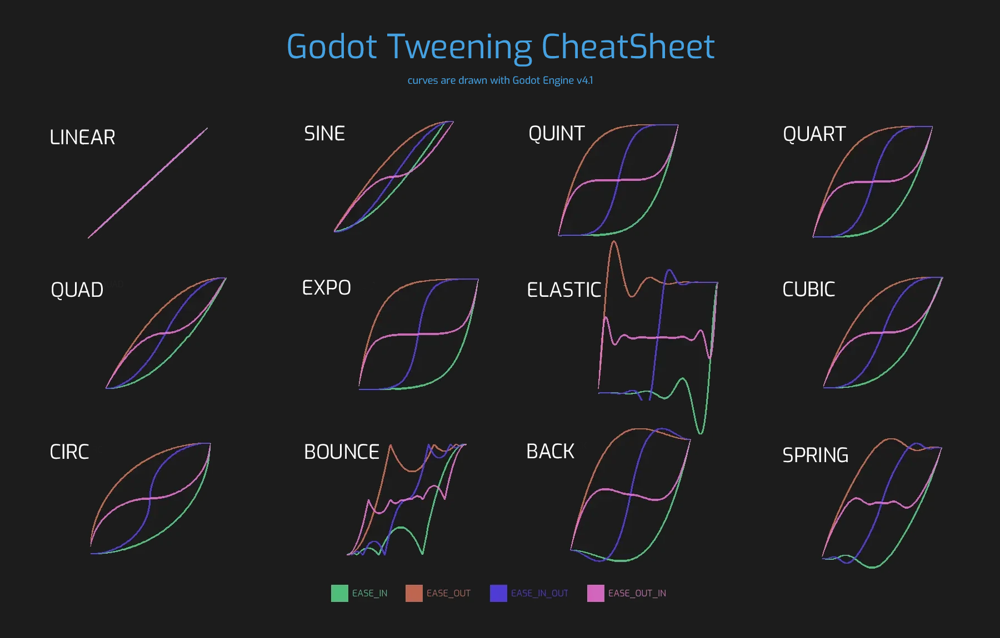
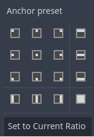
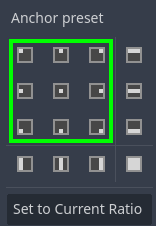
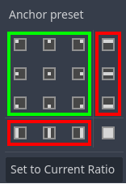
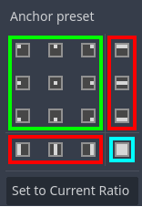
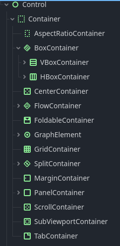
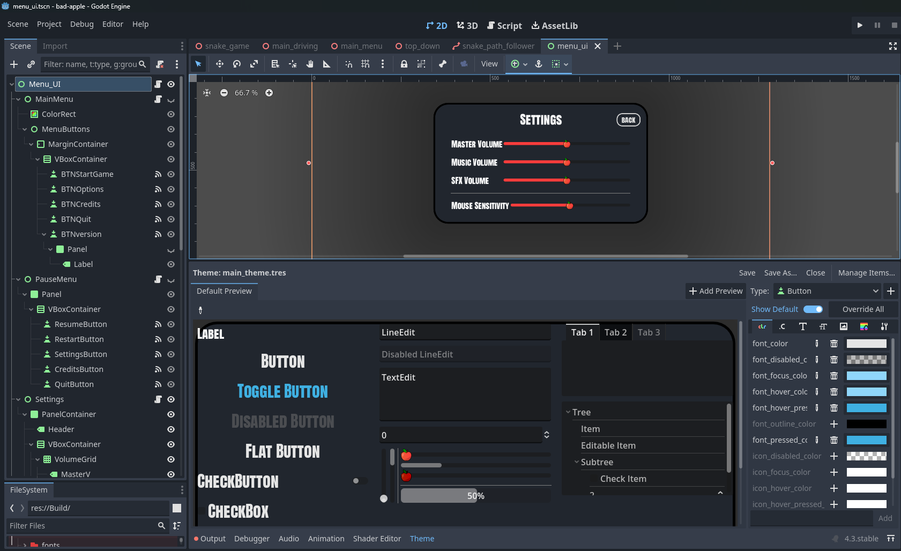

GAKI
07 Tweens und UI
Yannik Brändle - WS25/26
TH Bingen
Themen
- Was sind "Tweens"?
- Tween Grundlagen
- Control Nodes
- UI Themes
Was sind Tweens?
-
ein
Tweenist ein Weg eine Animation via code zu machen - Stichwort: Interpolation!
- Tweens werden in code "auf" einer Node gestartet und laufen bis Ende, oder bis sie beendet werden
- können in diversen Arten Werte von X zu Y interpolieren
- können auch Funktionen aufrufen
Hauptteile eines Tweens
tween_propertytween_callbacktween_methodtween_interval
tween_property
Interpoliert eine property von einem
inital_value zu einem final_value in
duration Sekunden.
tween_callback
Ruft eine Methode auf.
(nützlich um an Punkten im tween eine Methode zu triggern)
tween_method
Mischung aus den ersten beiden (from to in
duration), ruft dafür aber eine Methode auf und ändert
nicht direkt eine property.
tween_interval
Wartet duration Sekunden. (einfach ein delay im tween)
Beispiel: Simple 3 Punkt Bewegung
In gdscript:
const DURATION:float = 2
const TARGETS: Array[Vector2] = [Vector2(0,0), Vector2(100,100), Vector2(-150, 230)]
var target_counter = 1
var speed: float = 0
func _ready():
# calculate initial speed
speed = global_position.distance_to(TARGETS[target_counter]) / DURATION
func _physics_process(delta):
# move towards target
global_position = global_position.move_toward(TARGETS[target_counter], speed * delta)
# check if at target
if global_position.is_equal_approx(TARGETS[target_counter]):
# increment and loop counter
target_counter = (target_counter + 1) % TARGETS.size()
# calculate speed needed to finish path in exactly DURATION seconds
speed = global_position.distance_to(TARGETS[target_counter]) / DURATION
Das gleiche geht mit einem simplen tween!
func _ready():
var duration: float = 2
var tween = create_tween()
tween.tween_property(self, "global_position", Vector2(100, 100), duration)
tween.tween_property(self, "global_position", Vector2(-150, 230), duration)
tween.tween_property(self, "global_position", Vector2.ZERO, duration)
tween.set_loops()
Erweitertes Beispiel
Beliebig viele tweens pro Node!
func _ready():
var duration: float = 2
var tween = create_tween()
tween.tween_property(self, "global_position", Vector2(100, 100), duration)
tween.tween_property(self, "global_position", Vector2(-150, 230), duration)
tween.parallel()
tween.tween_property(self,"rotation_degrees", 180, duration)
tween.tween_property(self, "global_position", Vector2.ZERO, duration)
tween.parallel()
tween.tween_property(self,"rotation_degrees", 0, duration)
tween.set_loops()
var other_tween = create_tween()
other_tween.set_trans(Tween.TRANS_ELASTIC)
other_tween.set_ease(Tween.EASE_OUT)
other_tween.tween_property(self, "scale", Vector2(1.7,0.7), 1.5)
other_tween.tween_property(self, "scale", Vector2(0.8,1.8), 1.5)
other_tween.tween_property(self, "scale", Vector2(1,1), 0.7)
other_tween.tween_interval(1)
other_tween.set_loops(3)
Ease und Transition
- Tweens haben eingebaut verschiedene Ease und Trans typen
- Transition ist die Art des Übergangs
Easesind vier Variationen der Transition- EASE_IN
- EASE_OUT
- EASE_IN_OUT
- EASE_OUT_IN
- Es gibt 12 Transition types

Verlinkt auf der Tween doc seite von Godot: https://raw.githubusercontent.com/godotengine/godot-docs/master/img/tween_cheatsheet.webp
{kind=link}
Demo von QUART Transition mit den 4 Ease Typen
Demo von BOUNCE Transition mit den 4 Ease Typen
Code um die vier Sprites zu tweenen
@export var chars: Array[Sprite2D]
func _ready():
make_tween(chars[0], Tween.TRANS_BOUNCE, Tween.EASE_IN)
make_tween(chars[1], Tween.TRANS_BOUNCE, Tween.EASE_OUT)
make_tween(chars[2], Tween.TRANS_BOUNCE, Tween.EASE_IN_OUT)
make_tween(chars[3], Tween.TRANS_BOUNCE, Tween.EASE_OUT_IN)
func make_tween(node: Node2D, transition_type: Tween.TransitionType, ease_type: Tween.EaseType):
var tween = node.create_tween()
tween.set_trans(transition_type)
tween.set_ease(ease_type)
tween.tween_property(node, "global_position", Vector2.DOWN * 300, 2).as_relative()
tween.tween_interval(1)
tween.tween_property(node, "global_position", Vector2.UP * 300, 2).as_relative()
tween.tween_interval(1)
tween.set_loops()
Demo von LINEAR Transition mit den 4 Ease Typen
Cooler Interaktiver Tween guide (WIP)
https://qaqelol.itch.io/tweens
Video source: https://www.reddit.com/r/godot/comments/1p1lbyw/i_made_an_interactive_tween_guide/
Control nodes - UI
Was ist eine
 Control node?
Control node?
-
Erbt wie

Node2DvonCanvasItem - Die beiden haben dadurch viele Ähnlichkeiten
- Hauptunterschied sind Positionierungsoptionen
-
Wichtig: nicht-control nodes parents brechen die Viewport und
Controlnode Beziehung -
Ein

CanvasLayerrendert alleControlundNode2Dchildren unabhängig von dem Rest der Szene
Node2D und Control node verhalten sich ohne Hilfe gleich
Mit Canvaslayer über Control node
Control Nodes haben "klassische" Anchoring Funktionen




- ■ Kann an Punkten fixiert werden
- ■ Kann an Seiten fixiert und gestreckt werden
- ■ Kann den ganzen Parent ausfülllen
Demo von Anchoring
Wichtig für Anchoring:
- Die vorhin genannte Beziehung zum Viewport darf nicht gebrochen werden
- Ohne Control/Canvaslayer Parent keine wirklichen Anchoring Logik
- Anchoring ist relativ zum Parent → innerhalb der "box" des Parents wird anchored
Typische Positionierungscontainer sind auch vorhanden

Themes
- "Themes" sind die Art von Godot die UI Elemente zu stylen
- Themes sind ressourcen, die beliebig auf verschiedene UI Elemente gelegt werden können
- In einem Theme können pro UI Element alle Eigenschaften verändert werden
Theme overrides
- Ohne, dass extra ein Theme erstellt werden muss kann auf jeder Control node ein Theme override angewandt werden
- das gilt nur für die spezifische Node
- "überschreibt" auch ein gegebenes Theme
- Kann genutzt werden wenn die Node spezifisch anders aussehen soll
- Beispiel: Start button größere Font als die anderen Buttons, aber gleicher restlicher Stil
Beispiel eines "fertigen" Themes mit Containern

Tweens und UI Zusammen!
Kann frei unter jedes Canvasitem gehangen werden
class_name BounceInAnim
extends Node
var tween: Tween
@onready var parent: CanvasItem = get_parent()
@export_range(0.1, 3) var duration: float = 0.5
func _ready():
parent.visibility_changed.connect(_on_visibility_changed)
func _on_visibility_changed():
if tween:
tween.kill()
if parent.visible:
var start_scale = parent.scale
parent.scale = Vector2.ONE * 0.001
tween = create_tween()
tween.set_ease(Tween.EASE_OUT)
tween.set_trans(Tween.TRANS_ELASTIC)
tween.tween_property(parent, "scale", start_scale, duration)